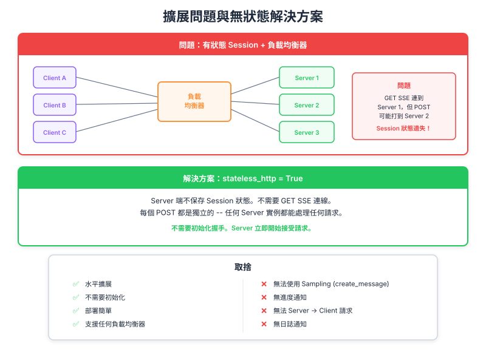

| Item | Detail |
|---|---|
| Exam Domain | D2 — Tool Design & MCP Integration (18%) |
| Task Statements | 2.1 (MCP transport 選擇), 2.4 (遠端 server 配置), 2.6 (水平擴展模式) |
| Source | model-context-protocol-advanced-topics / 03-transports / Lesson 14 |
水平擴展產生協調問題 — 同一 client 的兩個 SSE 連線可能命中不同 server instance，stateless_http=true 透過完全消除狀態來解決此問題，代價是失去主要 MCP 功能。

當 MCP server 變得熱門時，需要水平擴展 — 多個 server instance 在 load balancer 後面。這產生根本性的協調問題：
┌─── Instance A
Client ──→ LB ─────┤
├─── Instance B
└─── Instance C
回想 Lesson 13：client 維持兩個連線：
1. GET SSE（持久，用於 server-initiated 訊息）
2. POST request（每次 tool call）
Load balancer 可能將它們路由到不同 instance：
Client ── GET /sse ──→ LB ──→ Instance A （primary SSE 在這）
Client ── POST /tool ──→ LB ──→ Instance B （tool call 在這）
Instance B 處理 tool call，但 Instance A 持有 SSE 連線。Instance B 如何向 client 發送 progress 更新？
💡 Key Insight
讓 SSE 在單一 server 上運作的雙連線架構，在擴展時變成負擔。Load balancer 不理解 MCP session 語義。
stateless_http=true終極手段：消除所有狀態。啟用後：
| 功能 | 狀態 |
|---|---|
| Session ID | 停用 — 無追蹤 |
| Server → Client request | 停用 — 無 CreateMessage、無 ListRoots |
| Sampling | 停用 |
| Progress notification | 停用 |
| Resource subscription | 停用 |
| Initialization handshake | 不需要 — 任何 instance 可處理任何請求 |
# Stateless server — 不需要初始化
mcp_server = MCPServer(
stateless_http=True, # 每個請求獨立
json_response=False, # 仍可 per-request streaming
)
不需要初始化。任何 server instance 可以獨立處理任何請求。Load balancer 直接 round-robin — 不需要 sticky session、不需要 session affinity。
json_response=true消除 streaming 的互補旗標：
json_response=false（預設） |
json_response=true |
|---|---|
| Server 透過 SSE 串流結果 | Server 回傳單一 JSON 回應 |
| Client 即時看到進度 | Client 等待完整結果 |
| 需要保持連線開啟 | 標準 HTTP request-response |
| 需求 | stateless_http |
json_response |
結果 |
|---|---|---|---|
| 完整 MCP 功能，單一 server | false |
false |
透過 SSE 使用所有功能 |
| 水平擴展，保留部分 streaming | true |
false |
Per-request streaming，無 server-initiated |
| 最大可擴展性，簡單 API | true |
true |
僅基本 request-response |
| 有 streaming 但需要 session | false |
false |
LB 需要 sticky session |
功能性 ◄─────────────────────► 可擴展性
完整 MCP SSE workaround Stateless Stateless + JSON
（Stdio） （單一 server） （可擴展） （最簡單）
stateless_http=true 失去的stateless_http=true 得到的stateless_http 是標準解決方案。stateless_http=true 確切停用什麼 — 這是常考目標。true = 最簡單的 MCP server（基本 HTTP request-response）。| Front | Back |
|---|---|
| StreamableHTTP 面臨什麼擴展問題？ | 來自同一 client 的兩個連線（GET SSE + POST）可能命中 load balancer 後面的不同 server instance |
stateless_http=true 如何解決擴展問題？ |
消除所有狀態 — 無 session、無 SSE，任何 instance 獨立處理任何請求 |
stateless_http=true 停用哪五個功能？ |
Session ID、server→client request、sampling、progress notification、resource subscription |
| Stateless 模式的關鍵好處是？ | 不需要初始化 — 任何 server instance 無需事先 handshake 即可處理任何請求 |
json_response=true 做什麼？ |
消除 streaming — server 回傳單一最終 JSON 回應而非 SSE 事件 |
| 最簡單的 MCP server 配置是？ | 兩者都設為 true — 僅基本 HTTP request-response |
| 何時應該保持兩個旗標都為 false？ | 單一 server 部署且需要完整 MCP 功能（包括 SSE、sampling 和 progress）時 |
| 什麼 load balancer 策略適用於 stateless MCP？ | Round-robin — 不需要 sticky session 或 session affinity |